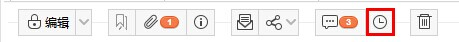
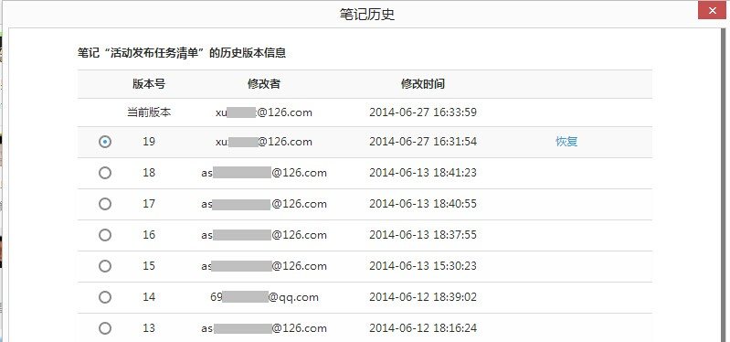
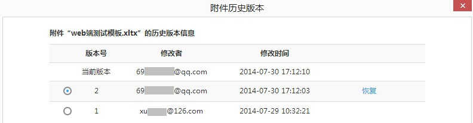

Wiz的数据安全
1.数据存储的安全。
Wiz本身采用了分散式存储技术，有效避免了单一文件存储容易出现的数据损坏的可能性。Wiz所有的文档和附件，都是独立的磁盘文件，用户可以在资源管理器里面直接看到所有的文档和附件。因此即使遇到突然断电，磁盘故障等问题，您的文档也都是安全的，即使被误删除或者格式化，分散式存储方式进行数据恢复成功的可能，也要远远高于单一大文件恢复的可能。
2.Wiz提供了阿里云存储服务
不但可以将您的数据同步到服务器，同时您可以方便的在多台电脑之间进行同步，因此即使其中一台或者您的多台电脑同时出现了问题（可能性非常低），您也可以完整的将您的数据同步下来，因此可以从根本上杜绝数据丢失的可能。有关阿里云安全问题详见<为知笔记阿里云服务介绍>
3.文档安全
Wiz的文档采用html格式，并且进行zip方式压缩，格式是公开和开放的，因此您无需担心以后离开Wiz后，数据无法使用的可能。
本地数据存储：
为知笔记Windows客户端的本地数据默认保存在C盘“我的文档”->My Knowledge 文件夹里，修改方法：菜单->选项->数据存储。 注意：如果要更改目录，尽量使目录中不要放为知以外的其他文件，否则下次更改存储目录时会将其他文件一同挪走。
备份和恢复备份功能：
对数据量较大的用户来说，在重装电脑或更换电脑时，重新同步全部笔记往往耗时较长，耽误使用。这样可以使用为知笔记Windows客户端的备份功能。备份的过程是一个将本地的数据目录打包压缩的过程，这样将备份文件拷贝到新的电脑环境下，只需要恢复备份就可以原样恢复数据，省去了很多同步的时间。 备份操作方法：菜单->文件->备份，恢复备份操作方法：菜单->文件->恢复备份。
历史版本恢复功能：
在长时间的笔记使用过程中，如果发生多人修改笔记的冲突的情况，不用着急，为知笔记windows客户端提供了历史版本恢复功能。
笔记历史版本恢复：
- 点击笔记标题上方的“笔记历史”按钮
- 选择需要恢复的版本->点击恢复即可
附件历史版本恢复：
- 右键点击附件->历史

- 选择需要恢复的版本->点击恢复即可
历史版本是指服务器会自动保存每篇笔记的近20个版本。如果一篇笔记做了修改，并同步成功，即产生了新版本，修改前的作为历史版本保留在服务器中，可恢复找回。
注意：
- 如果在不联网不同步的情况下一直在做修改，无法保存在历史版本中，因为没有同步的话服务器就无法记录。
- 历史版本恢复最对只支持保存最近的20个版本
- 免费用户可恢复到最近的一个版本，升级企业版或者个人VIP可获得更多历史版本恢复。有关个人VIP更多详情：享受为知笔记VIP服务
已删除恢复功能：
为了防止误删除导致笔记无法找回，当在Windows客户端清空“已删除”后，还可以“已删除恢复”，里面包含你近期在网页版、移动端或电脑端已删除文件夹 里面删除的笔记和附件，可恢复回来。删除30天后这部分笔记将自动清空，无法再被恢复。
注意：
- 可恢复的前提是你删除的笔记在删除前进行过同步，即在服务器里存在过。若本地的笔记在同步上传前就彻底删除了，就不能通过这个方法找回。
- 恢复企业群组里的笔记需要超级用户及以上权限的成员才可以操作
为知笔记私有部署
为知笔记提供私有部署（私有云）解决方案，您可以把为知笔记服务端部署在您的企业局域网内（或者部署于企业自己的公网服务器，提供移动客户端访问能力）。 我们提供两种私有部署方案：
1.阿里云部署方式
将为知笔记部署服务端在阿里云上面。企业自己申请和维护阿里云账号，为知笔记负责将服务端部署在阿里云上面。 优点：
- 可以依托阿里云，保障数据安全。阿里云上面，每一条笔记，至少有三个备份，从而避免因为服务器硬件损坏而造成的数据丢失。
- 可以 提供移动客户端访问能力。您的成员可以使用为知笔记手机或者平板客户端。
- 成本低廉：阿里云提供弹性收费，可以按月/按年的方式收费。一次性投入比较少。
如果您是已经是阿里云用户，或者信赖阿里云，推荐您使用这种方式。
2.企业内部部署方式
将为知笔记部署在企业私有服务器上面。该服务器由您自己负责维护，可以在您的企业局域网内，也可以是您的企业自己的托管主机。 注意：
- 服务器由您自行提供和维护。
- 数据安全，备份等也由您自己维护。
- 如果部署在企业局域网，您无法在企业外部使用移动客户端，如手机客户端，平板客户端等。
- 如果部署在您的托管主机上面，可以提供手机，平板访问服务，成员也可以在家里使用。
硬件需求：
- 最少一台主流的Linux服务器，四核以上CPU，8G以上内存，200G以上硬盘空间（可以使用LVM动态扩容）
- Linux版本：CentOS X86_64 6.4
- 您的团队需要具有一定的IT能力。
3.价格
根据您的部署方式，数据量以及硬件情况，价格会有不同。请致电联系：400-825-8085 / 13683661556
4.私有部署方案
现在您可以将为知笔记部署在企业内部，点击这里了解操作过程： <将为知笔记服务端部署在企业内部>